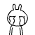
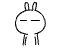
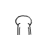
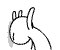
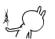
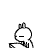
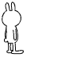

Historia del ciclo universitario
En la primera semana.
En la segunda semana.
Antes del examen parcial.
Durante el examen parcial.
Después del exámen parcial.

Antes del examen final.
Una vez que sabes la hora del examen final.
7 días antes del examen final.
6 días antes del examen final.

5 días antes del examen final.
4 días antes del examen final.
3 días antes del examen final.

2 días antes del examen final.
1 día antes del examen final.

Una noche antes del examen final.

1 hora antes del examen final.
Durante el examen final.

Una vez que saliste del examen final.
Después del examen final, en vacaciones.

Feliz final de ciclo.